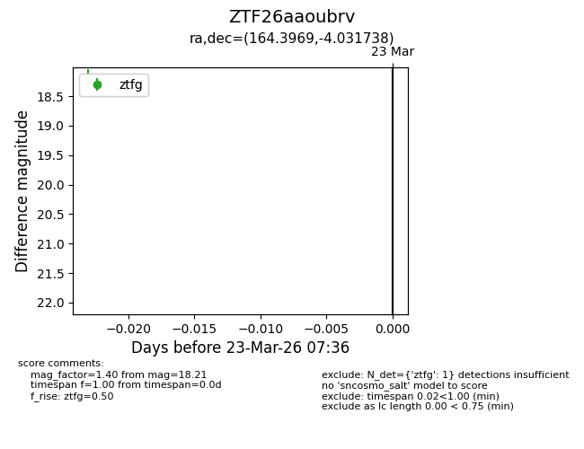
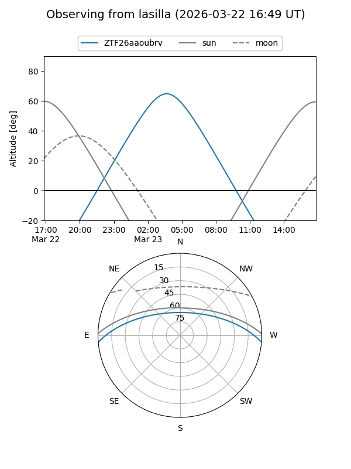
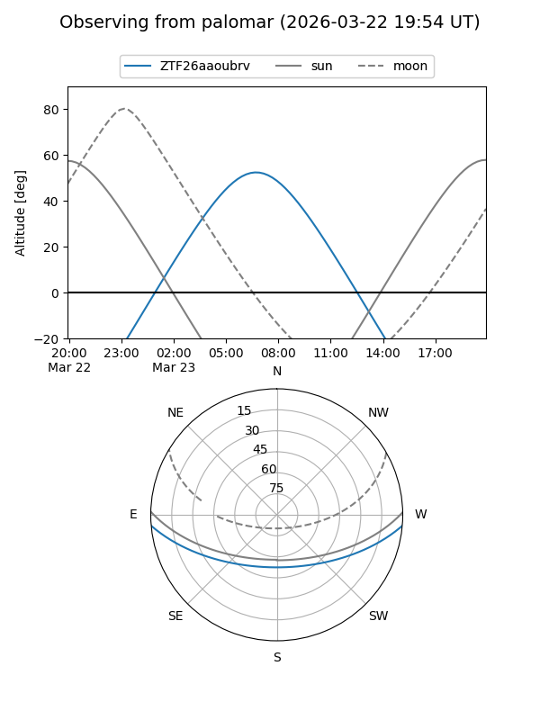

ZTF26aaoubrv
Target ZTF26aaoubrv at 2026-03-23 07:38
Aliases and brokers:
FINK: link
Lasair: link
ALeRCE: link
alt names
ZTF26aaoubrv (ztf,fink_ztf)
Coordinates:
equatorial (ra, dec) = 164.3969,-4.03174
equatorial (HMS+DMS) = 10:57:35.25,-04:01:54.26
galactic (l, b) = (257.1405,+48.45350)
Flags:
Photometry:
last ztfg=18.21
1 ztfg detections
Lightcurve

Visibility


Additional plots